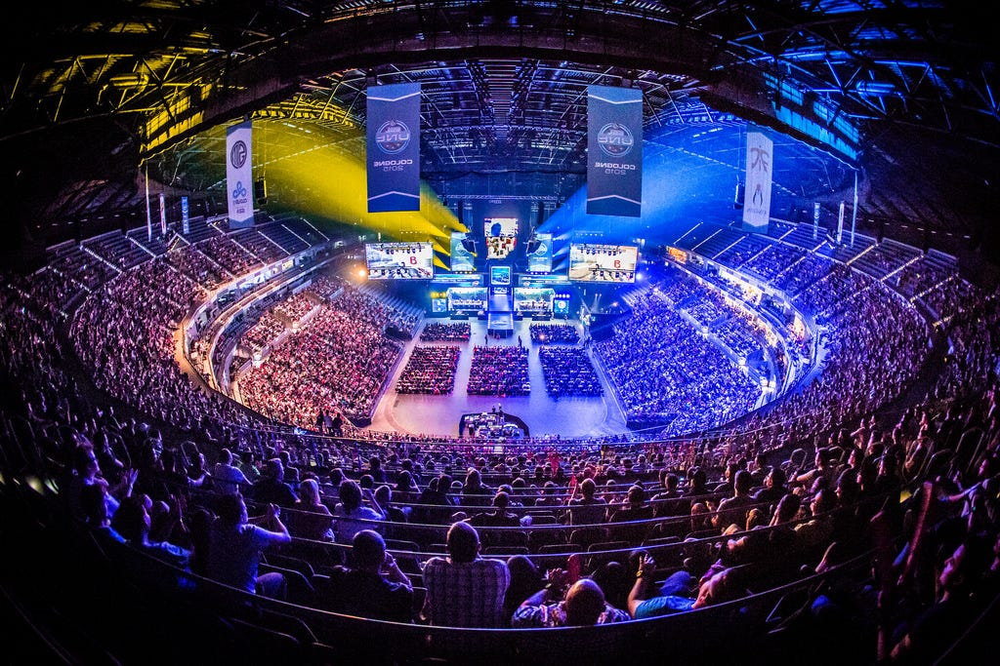

E-Urheilu
Counter-Striken rooli e-urheilussa

Counter-Strike on ollut merkittävä osa e-urheilua jo yli 20 vuotta. Pelin kilpailullinen luonne, taktinen syvyys ja nopeatempoisuus tekevät siitä erinomaisen e-urheilulajin.Counter-Strike: Global Offensive (CS:GO) oli erityisen suosittu e-urheilulaji, ja sitä pelattiin laajasti kilpailuissa ympäri maailmaa. CS:GO-kilpailut houkuttelevat suuria yleisöjä ja tarjoavat merkittäviä palkintorahoja, mikä on auttanut kasvattamaan pelin suosiota e-urheilukentällä.
CS-kilpailut järjestetään usein turnauksina, joissa joukkueet kilpailevat toisiaan vastaan erilaisissa karttaformaatioissa. Turnaukset voivat olla paikallisia, kansallisia tai kansainvälisiä, ja ne houkuttelevat huippupelaajia ympäri maailmaa.
Counter-Striken rooli e-urheilussa on ollut keskeinen, ja se on auttanut muokkaamaan e-urheilukulttuuria ja kasvattamaan sen suosiota globaalisti. Pelin kilpailullinen luonne, taktinen syvyys ja nopeatempoisuus tekevät siitä erinomaisen e-urheilulajin, joka jatkaa kasvuaan ja kehittymistään tulevaisuudessa.
Counter-Striken vaikutus e-urheilu kulttuuriin on niin suuri, että Counter-Strike pelejä on näytetty myös televisiossa, ja niistä on tehty dokumentteja ja elokuvia, jotka kertovat pelin historiasta, kilpailuista ja pelaajista.
Counter-Strike on kasvava peli jonka pelaajamäärä kasvaa vuosi vuodelta korkeammaksi ja kilpailut houkuttelevat yhä suurempia yleisöjä. 2025 Texasissa järjestetty CS2 turnaus keräsi yli 75 MILJOONAA katsottua tuntia ja yli 1.5 miljoonaa katsojaa, mikä on uusi ennätys. Counter-Strikestä on myös puhuttu olympia tasolla, sillä e-urheilusta on puhuttu olympialajina jo pitkään, ja Counter-Strike on yksi niistä peleistä, joita on ehdotettu olympialajiksi. Vaikka e-urheilua ei vielä ole hyväksytty olympialajiksi, Counter-Striken rooli e-urheilussa on kiistaton, ja se jatkaa kasvuaan ja kehittymistään tulevaisuudessa.